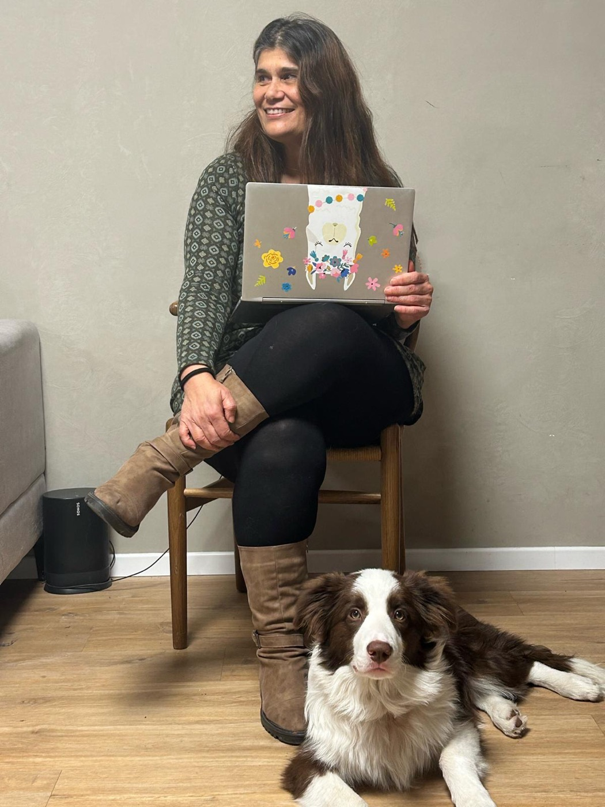
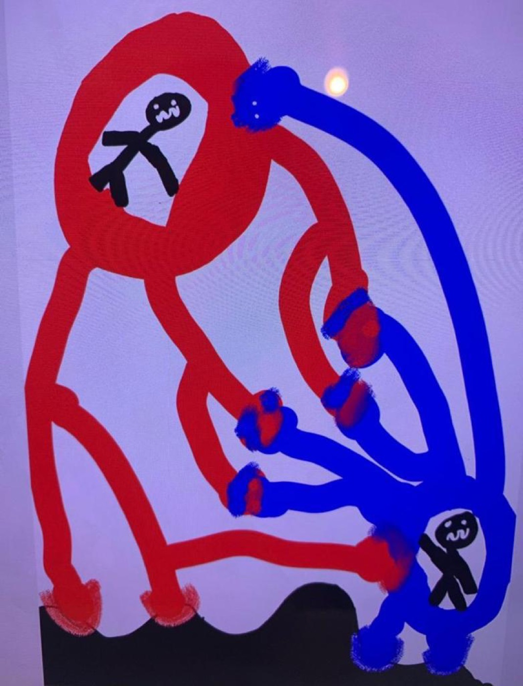
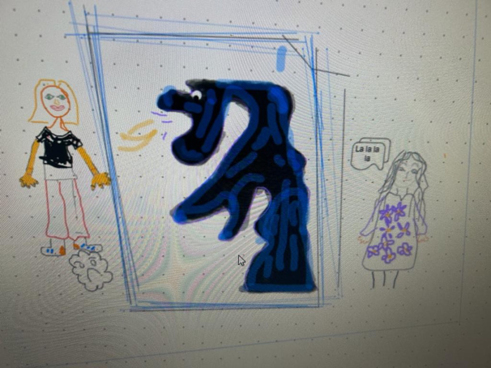
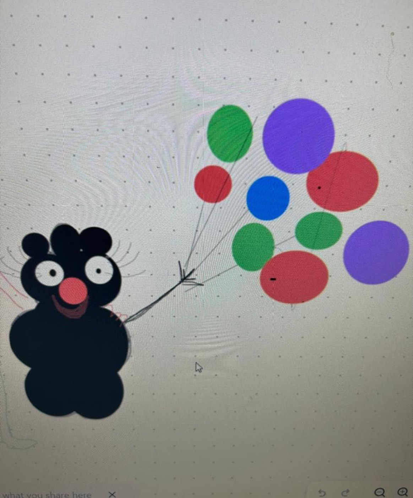
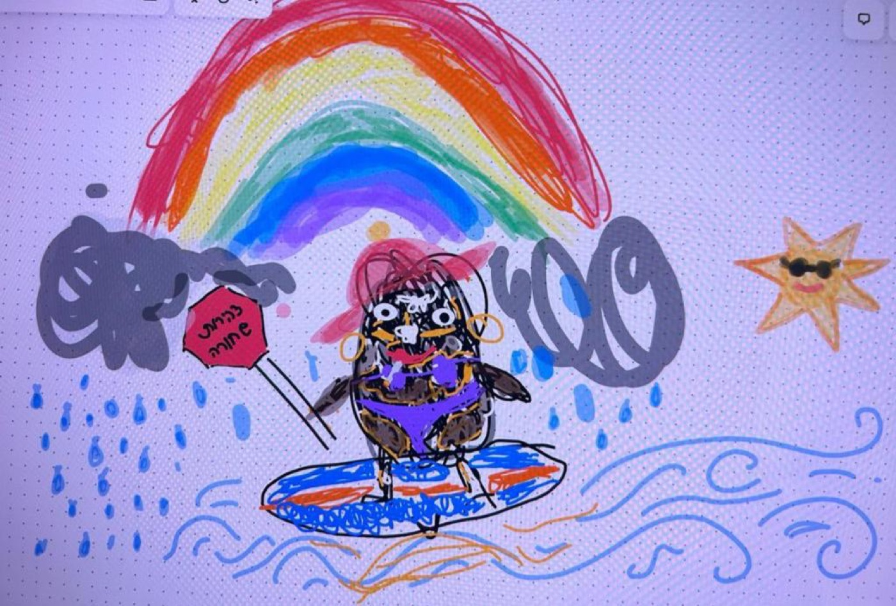
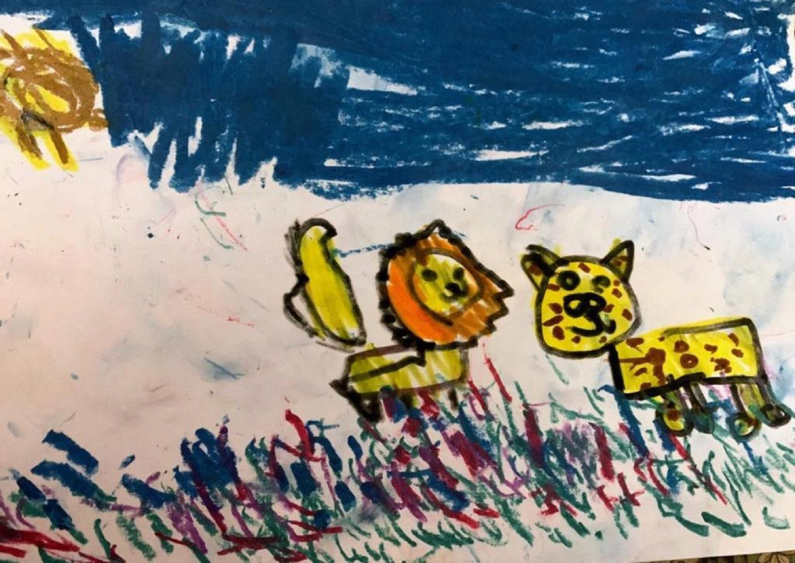

טיפול בגישה חמה ומעשית לילדים, למתבגרים ולמבוגרים, והדרכת הורים. בקליניקה בסידני או אונליין, בעברית ובאנגלית, בהתאם לצרכים שלכם ולקצב שלכם.
יותר מ־20 שנות ניסיון בעבודה טיפולית בישראל ובאוסטרליה.
חשוב לי ליצור קשר שבו אפשר לדבר בפתיחות ולהרגיש בנוח. יחד ננסה להבין מה קשה, מה הייתם רוצים לשנות ומה יכול לעזור. אני משלבת גישות וכלים בהתאם לאדם שמולי, עם מקום גם לעיבוד רגשי וגם לעבודה מעשית.
המטרה היא שהדברים שנעשה בטיפול ילוו אתכם גם בחיי היומיום ויחזקו את היכולת שלכם להתמודד באופן עצמאי.
״קשיים הם שערים לריפוי. כוחות הריפוי כבר נמצאים בתוכנו.״

אני יעל קריו, פסיכותרפיסטית בעלת הכשרה בפסיכותרפיה קוגניטיבית־התנהגותית (CBT) ותואר שני בטיפול באומנויות — בתנועה ומחול.
כבר יותר מעשרים שנה אני מלווה ילדים, מתבגרים, מבוגרים והורים. לאורך השנים עבדתי במסגרות חינוכיות וציבוריות ובקליניקה פרטית, בישראל ובאוסטרליה.
בשבילי, טיפול הוא קודם כול קשר בין אנשים. חשוב לי ליצור מרחב שיש בו הקשבה, כנות וכבוד, ולשלב הבנה רגשית עם כלים שאפשר לקחת לחיי היומיום.
אני אמא לשלושה וישראלית המתגוררת בסידני. החיים בין מדינות ותרבויות הם חלק מהסיפור שלי, וגם חלק מהעבודה שלי עם אנשים ומשפחות שמתמודדים עם שינוי ומעבר.
התמודדות עם שינוי, געגוע וחוסר שייכות, והסתגלות למדינה, למסגרת או לשלב חדש בחיים.
עבודה עם דאגנות, חרדה חברתית, פחדים והתקפי חרדה אצל ילדים, מתבגרים ומבוגרים.
מקום לדבר על הקושי, להבין אותו ולמצוא צעדים שיכולים לעזור לחזור למעורבות ועניין בחיים.
עיבוד חוויות מכאיבות והתמודדות עם השפעתן על החיים, בהתאם לצרכים ולמוכנות האישית.
טיפול המשלב שיחה, משחק ויצירה בהתאם לגיל ולצרכים, ובשיתוף ההורים לפי הצורך.
הבנת הקשיים של הילד, חיזוק הקשר ובניית דרכי התמודדות שמתאימות למשפחה.
מעבר למדינה חדשה יכול להיות מרגש, אבל גם לעורר געגוע, בדידות וחוסר ודאות. לפעמים כל אחד מבני המשפחה מסתגל בקצב אחר. כישראלית שחיה בסידני, אני מכירה את המורכבות הזו גם באופן אישי. בטיפול אפשר לתת מקום למה שהמעבר מעורר ולחפש יחד דרכים לחזק את תחושת היציבות והשייכות.
טיפול בקליניקה בסידני או אונליין, בעברית ובאנגלית. שעות המפגשים נקבעות בתיאום אישי.
אני משלבת כלים מגישות טיפוליות שונות, ובהם CBT ו־EMDR, בהתאם לצרכים ולמטרות שנגדיר יחד.
לפעמים ציור, סיפור או תנועה פותחים דרך נוספת לביטוי ולהבנה. אפשר לשלב אותם בטיפול בהתאם לגיל, לרצון ולמה שמתאים לכם.





לא צריך לדעת מראש בדיוק מה לומר. כתבו לי בקצרה מה מביא אתכם, ואחזור אליכם אישית כדי שנבדוק יחד אם הטיפול מתאים.
וואטסאפ: +972 52-542-4127
מייל: yaelkario@gmail.com